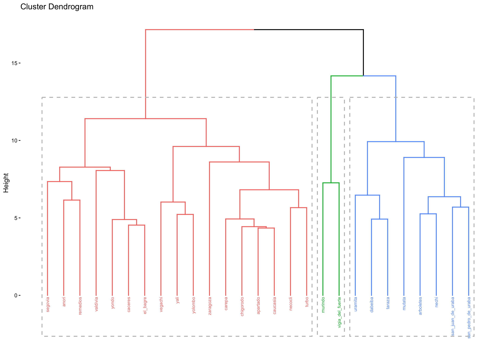
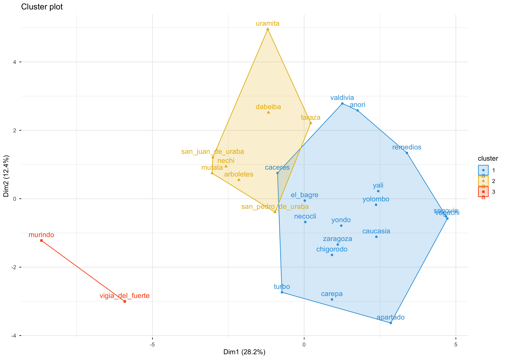

Una vez construida una aproximación simple para cada una de las subdimensiones, se realizó el último paso del análisis: identificar las realidades territoriales a partir del análisis sistemático de la información disponible. Para esto, se aplicó un método de aprendizaje no supervisado para dividir las observaciones en grupos que cumplan los siguientes principios(Anderson 2003):
Principio de cohesión: cada grupo debe ser homogéneo internamente en las variables utilizadas. En el presente proyecto, se busca que las regiones o departamentos sean altamente parecidos en las 13 dimensiones de la metodología Pulso Social.
Principio de separación: se debe garantizar que las diferencias entre grupos estén claramente definidas, es decir, que cada grupo presente condiciones que lo distingan de los demás.
En el marco de Pulso Social, el análisis de conglomerados ofrece una lectura de las brechas territoriales en Antioquia a partir de un análisis sistemático de las dimensiones que componen la metodología. A continuación, se presentan estadísticas descriptivas de los índices empleados en el análisis (resultado del ACP).
1.1 Estadísticas descriptivas de los índices
Código
library(readxl)library(knitr)library(magrittr)ruta_excel <-"Vulnerable/04_Cluster/Summary_Stats.xlsx"tabla_resumen <-read_xlsx(ruta_excel)tabla_resumen %>% dplyr::select(Etiqueta, N, Media, SD, Min, Max) %>% dplyr::mutate(Media =round(Media, 3), SD =round(SD, 3), Min =round(Min, 3), Max =round(Max, 3)) %>%kable(caption ="Resumen de variables numéricas válidas")
Resumen de variables numéricas válidas
Etiqueta
N
Media
SD
Min
Max
Acceso a servicio de agua potable y saneamiento - 1
27
0
1
-4.938
0.371
Adultez - 1
27
0
1
-1.499
2.098
Adultez - 2
27
0
1
-1.805
2.250
Adultez - 3
27
0
1
-2.518
1.721
Cambio climatico - 1
27
0
1
-2.209
1.905
Cambio climatico - 2
27
0
1
-2.035
1.514
Capacidad fiscal - 1
27
0
1
-2.064
1.535
Capacidad fiscal - 2
27
0
1
-2.991
1.924
Características de las viviendas - 1
27
0
1
-2.424
1.464
Características de las viviendas - 2
27
0
1
-1.982
2.148
Desarrollo económico - 1
27
0
1
-2.367
1.861
Desarrollo económico - 2
27
0
1
-1.743
2.284
Desarrollo económico - 3
27
0
1
-2.068
1.500
Desigualdad - 1
27
0
1
-1.501
2.494
Estructura demográfica - 1
27
0
1
-2.805
1.818
Infancia y Niñez - 1
27
0
1
-1.117
2.781
Infancia y Niñez - 2
27
0
1
-1.732
2.607
Infancia y Niñez - 3
27
0
1
-2.285
2.926
Infancia y Niñez - 4
27
0
1
-2.744
1.624
Juventud - 1
27
0
1
-3.195
1.949
Juventud - 2
27
0
1
-2.886
1.584
Juventud - 3
27
0
1
-1.850
2.562
Juventud - 4
27
0
1
-2.398
2.069
Pobreza - 1
27
0
1
-1.732
2.064
Pobreza - 2
27
0
1
-1.539
1.805
Salud - 1
27
0
1
-3.058
1.338
Salud - 2
27
0
1
-2.411
2.022
Salud mental - 1
27
0
1
-1.955
2.532
Salud mental - 2
27
0
1
-2.474
1.409
Seguridad - 1
27
0
1
-2.427
1.413
Seguridad - 2
27
0
1
-1.337
1.969
Vejez - 1
27
0
1
-1.844
2.945
2 Matriz de distancia o disimilitud
El primer paso del análisis de conglomerados es la estimación de la matriz de distancia/disimilitud, que establece una medida de (dis)similitud entre cada par de observaciones. Existen varios métodos para estimarla; dado que se observaron resultados similares entre alternativas, se eligió el método euclidiano1:
La siguiente figura presenta los resultados de la aplicación de la matriz de distancia. Se sugieren varios grupos de departamentos con condiciones similares. Por ejemplo, Antioquia, Valle del Cauca, Risaralda, Caldas y Quindío muestran alta similitud; en contraste, Vaupés, La Guajira, entre otros, difieren de los anteriores pero son similares entre ellos. Esta es la primera aproximación a los posibles clusters que surgirán del análisis.
3 Método jerárquico aglomerativo (AGNES)
El método de conglomerados utilizado fue el jerárquico aglomerativo, también conocido como AGNES (Agglomerative Nesting). La lógica es la siguiente: cada objeto inicia como un clúster de un solo elemento; de forma iterada, se van combinando en clústeres mayores hasta que todas las observaciones pertenecen a una única raíz (Anderson 2003). Esta lógica permite una representación visual conocida como dendrograma.
3.1 Selección del método de enlace
Dado que existen distintos criterios de enlace (linkage), se realizó una comparación mediante el coeficiente de aglomeración, que indica el poder de explicación de la estructura de agrupación para un enlace dado. Cuanto más cercano a 1, mejor la agrupación (Anderson 2003).
Resultados:
average
single
complete
ward
0.45
0.30
0.60
0.65
Conclusión: el enlace Ward es el más apropiado en este caso.
3.2 Determinación del número de clústeres (k)
Tras elegir el enlace, se determina el número óptimo de clústeres. Aunque no existe un criterio único, el más usado es el método del codo (elbow), que busca el (k) que minimiza la variación intra–clúster (WSS):
\[
\arg\min_{k}\ \sum_{j=1}^{k} W(C_j)\,,
\]
donde (C_j) es el clúster (j)-ésimo y (W(C_j)) su variación intra. La WSS mide la compacidad de la agrupación; se desea que sea lo más pequeña posible. Los resultados se muestran a continuación.
A partir de la evidencia y la discusión técnica, se concluye que el número óptimo de clústeres es tres (3).
3.3 Dendrograma y representación de clústeres
Una vez definido el enlace y (k) óptimo, se presenta la salida gráfica del análisis.
 
4 Composición de los clústeres
Clúster 1 – Antioquia vulnerable - Alta
Clúster 2 – Antioquia vulnerable - Media
Clúster 3 – Antioquia vulnerable - Baja
La representación espacial de los clústeres se ilustra a continuación.
5 Contribución de las variables
Finalmente, se presenta la composición/media de las variables por tipo de clúster. El análisis detallado se desarrolla en el informe técnico.